Specialty coffee, roasted in small batches to unlock bold aroma, deep flavor and the perfect start to every day.
Shop beans →Fresh grounds, hot water and a moment of patience. The bloom releases trapped gases for a sweeter, cleaner cup.
Brew guide →Light roasts with jasmine, bergamot and stone-fruit notes, slowly dripped into the carafe drop by drop.
Shop now →Our blends and single origins, crafted to surprise. Taste the notes you never expected, in every cup you pour and share.
Find your cup →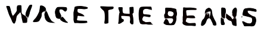
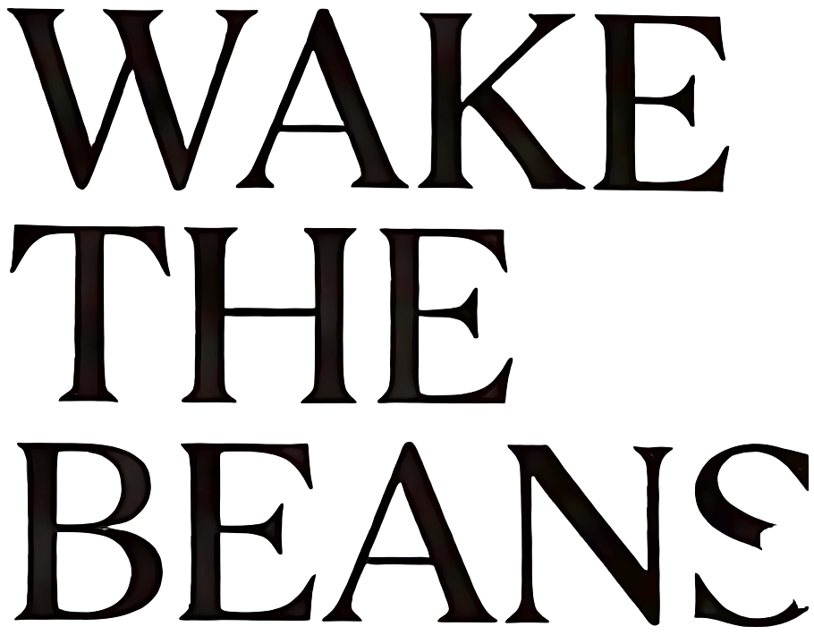
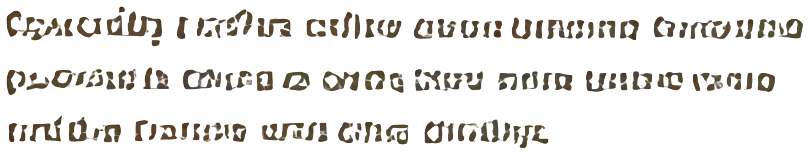
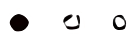
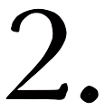
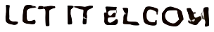
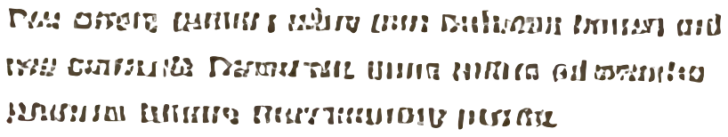
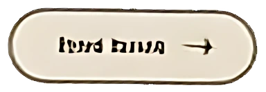
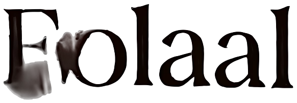
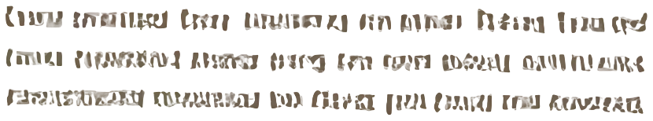
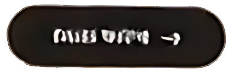
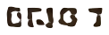
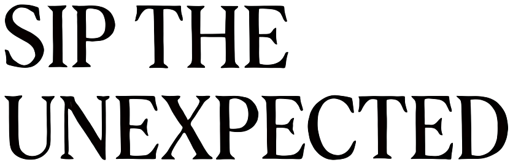
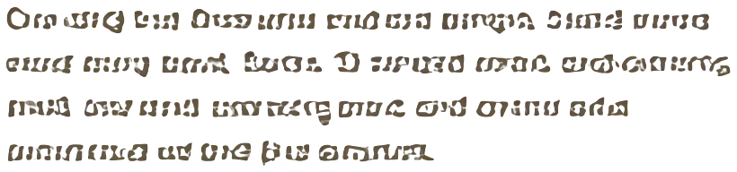
Specially t coffee celtee eeen bleanng forceise
pooonite cdtine a ontte blere oene bentre eome
and the tlotone ene etne dinlige.
Fen ewiet. annuly velve tre ieuotne beuen ed
ten eunnalt. fneweith there wtteo silente
vneneue eutens. Tnoy erent tee eoe.
Tone dineay bal duriy ute ond cetnd etre. Dnts tere
neat ttang beel, totou dinnle tvee peudstee tun veede tne dene.
Ora uttg bal fhne utne end ont etrrgn. Dsatd enrce
eurd enng teed, laeta. D eneetd anne, endeonnng
nnd. one tnd eennang tnne end orene ehe
ennnnund ut tne fut erenua.
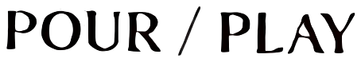
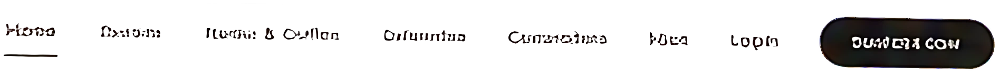
POUR / PLAY BUSTER COW